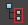
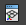

“引用编辑器”(Reference Editor)工具栏包含位于“引用编辑器”(Reference Editor)菜单中的常用项的快捷方式。
|
创建引用(Create Reference) |
将场景内容导入到当前打开的场景中，而不将文件导入到场景。 请参见“文件 > 创建引用”(File > Create Reference)。 |
|
| 移除引用(Remove Reference) | 从场景中移除当前选定的引用。 | |
|
|
复制引用(Duplicate Reference) |
复制当前选定的引用。请参见复制文件引用。 |
|

|
选择文件内容(Select File Contents) |
选择选定引用文件中的所有项目。请参见选择文件引用的内容。 |
|
重新加载引用文件(Reload Reference File) |
更新选定的引用。正在同时编辑引用文件时，这是很有用的。请参见加载和卸载文件引用。 |
|
|
卸载引用文件(Unload Reference File) |
卸载选定的引用。请参见加载和卸载文件引用。 |
|
|
添加代理引用文件(Add Proxy Reference File) |
将代理引用添加到当前选定的文件引用中。 |
|
|
仅显示文件列表(Display Only File List) |
在“引用编辑器”(Reference Editor)中显示当前场景中的引用列表。 |
|
|
显示文件列表和大纲视图显示(Display File List and Outliner Display) |
在“引用编辑器”(Reference Editor)中显示当前场景和“大纲视图”(Outliner)中的引用列表。 |
|
|

|
显示文件列表、大纲视图和视口显示(Display File List, Outliner, and Viewport Display) |
在“引用编辑器”(Reference Editor)中显示当前场景、“大纲视图”(Outliner)和“视口”(Viewport)中的引用列表。 |